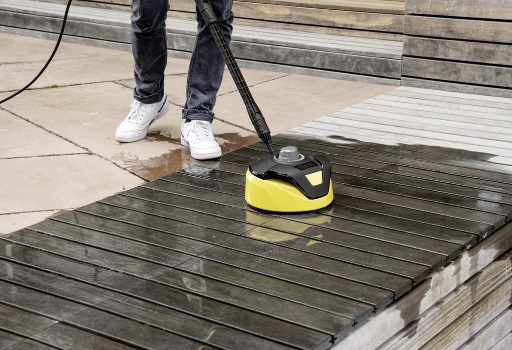

🧼 Prestations nettoyage

Nettoyage vitres
À partir de 30 €

Nettoyage poubelles
À partir de 10 €

Parties communes
Sur devis

Haute pression
À partir de 5 €/m²
jeremservices11 – Aude (11)
🌿 Jardin 📞 07 69 72 18 00
À partir de 30 €
À partir de 10 €
Sur devis
À partir de 5 €/m²
jeremservices11 intervient pour le nettoyage de bâtiments, vitres, poubelles et parties communes à Carcassonne et dans tout l’Aude.